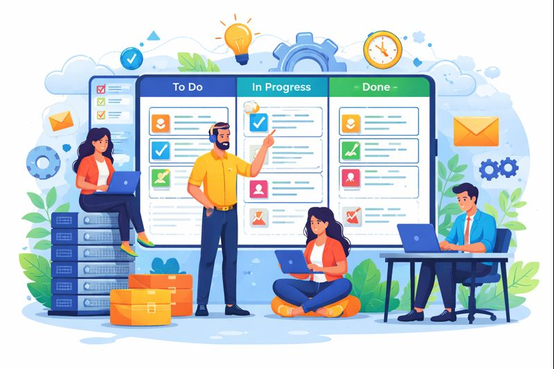

Hello, I'm Basel Qarout
University ID
0225322
University
University of Jordan
Major & College
Artificial Intelligence — KASIT
Course
IT Project Management
Instructor
Ahmad H. Kheraisat
Semester & Academic Year
First Semester — 2025–2026
I'm a AI Student
This is my course portfolio. It contains my assignments, extracurricular activities, reflection notes for each lecture, and a curated list of academic websites that support my major.
“Trust yourself. You know more than you think you do.”
Assignments
Assignment 1 — IT Project Management
Assignment 2 — Computer Vision
Assignment 3 — Robotics
Extracurricular Activities & Introduction Video
Voluntary Work
- • Contributing to breakfasts for orphans during Ramadan
- • Teaching students
Student Activities
- • Member at IEEE CIS
- • Previous member at Iteam
Conferences / Competitions
- • Participated to IEEE IT Cup 2025-2026
- • Participated to Work & Travel program in U.S
Hobbies
- • Sports
- • Travelling
- • Audio books listening
Introduction Video (≥ 1 minute)
Technical Skills
Python
TensorFlow
PyTorch
Git
SQL
C++
Soft Skills
Teamwork
Communication
Leadership
Time Management
Tools & Platforms
Google Colab
Kaggle
Google Drive
VS Code
Jupyter
ChatGPT
Claude
Google scholar
Microsoft To Do
Self-Assessment & Reflection
Lecture Reflection Files
| Date | Lecture | File |
|---|---|---|
| 2025-10-12 | Lecture 01 — Course Introduction and Project Management Fundamentals | Open |
| 2025-10-14 | Lecture 02 — Role of the Project Manager, Stakeholders, and Environments | Open |
| 2025-10-16 | Lecture 03 — PMBOK Knowledge Areas and Enterprise Success | Open |
| 2025-10-19 | Lecture 04 — Portfolios, Programs, and the PMI Talent Triangle | Open |
| 2025-10-21 | Lecture 05 — Project Management in an IT and Organizational Systems Context | Open |
| 2025-10-23 | Lecture 06 — Waterfall Model Overview | Open |
| 2025-10-30 | Lecture 07 — Waterfall vs. Agile and the Agile Manifesto | Open |
| 2025-11-04 | Lecture 08 — Development Environments, Hiring Fit, and Intro to Data Flow Charts | Open |
| 2025-11-06 | Lecture 09 — Scrum Framework (Roles, Artifacts, Ceremonies) | Open |
| 2025-11-09 | Lecture 10 — Flow Charts, UML Actors, and Smoke Testing Basics | Open |
| 2025-11-13 | Lecture 11 — Process Flow Charts (Lean Six Sigma) | Open |
| 2025-11-25 | Lecture 12 — AI as a Trend Discussion and SWOT Analysis Introduction | Open |
| 2025-11-27 | Lecture 13 — SWOT Analysis | Open |
| 2025-12-04 | Lecture 14 — Project Scheduling with PERT/CPM and Critical Path | Open |
| 2025-12-07 | Lecture 15 — Critical Path in Project Management (Lecture Reflection) | Open |
| 2025-12-09 | Lecture 16 — AI in Project Management: Predictive Tools vs. Real Intelligence | Open |
| 2025-12-11 | Lecture 17 — Independent Reading: Project Management as a Craft (Dr. Mike Clayton) | Open |
| 2025-12-21 | Lecture 18 — Project presentation - 1 | Open |
| 2025-12-23 | Lecture 19 — Project presentation - 2 | Open |
| 2025-12-28 | Lecture 20 — Project presentation - 3 | Open |
| 2025-12-30 | Lecture 21 — Project presentation - 4 | Open |
| 2026-01-04 | Lecture 22 — Project presentation - 5 | Open |
Favorite Academic Websites
Useful and reliable academic/scientific websites related to Artificial Intelligence:
- arXiv — preprints and research papers.
- Google Scholar — paper search and citations.
- IEEE Xplore — journals and conferences.
- W3schools — online tutorials.
- Papers With Code — papers + implementations.
- Kaggle — datasets and competitions.
- TensorFlow Docs — official documentation.
- PyTorch Docs — official documentation.